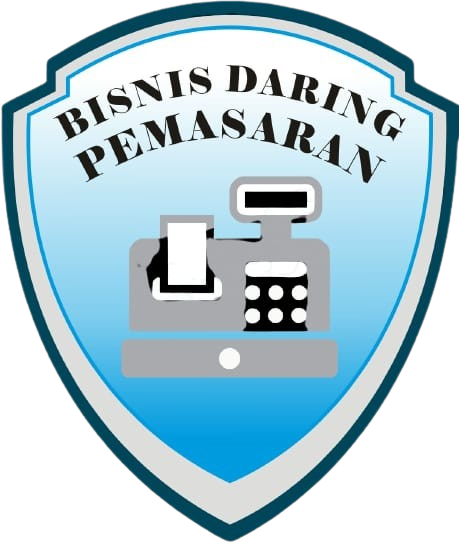

Bisnis Daring & Pemasaran
 Prospek Kerja Bisnis Daring dan Pemasaran Selain memberikan dukungan program BDP,Kementerian Pendidikan dan Kebudayaan juga mengeluarkan standar kompetensi pembelajaran tersebut untuk sekolah kejuruan. Sekolah kejuruan ini menciptakan individu yang siap bekerja.Bahkan mampu mengembangkan bisnis atau usaha, baik secara online maupun konvensional. Ruang lingkup kerja bagi lulusan program BDP adalah profesi yang relevan dengan kompetensi tersebut.Dunia usaha yang terkait meliputi perusahaan jasa,dagang, manufaktur,maupun Instansi Pemerintah atau Swasta. Sementara konsentrasi jurusan BDP lingkup kerjanya pada toko, supermarket,dealer,dan ritel. Meliputi tenaga penjual,marketing,purchasing, kasir,administrasi penjualan dan pembelian,pengelola gudang,dan perantara online marketing. Selain itu,bisa juga dalam lingkup pabrik seperti pergudangan,keuangan, dan distribusi barang.Apabila masuk lingkup koperasi sebagai manajer,pemasaran, atau pembukuan.Sedangkan lingkup kerja asuransi menjadi staff,pencari nasabah,atau debt collector. Sekolah Lanjutan di Perguruan Tinggi Jenis tes yang biasa dilakukan untuk seleksi BDP biasanya berupa seleksi fisik dengan mengukur tinggi badan,berat badan,dan yang lainnya.Kemudian dilanjutkan seleksi psikologi dan yang terakhir adalah wawancara.Indikator kelulusan ditentukan oleh pihak penyelenggara. Untuk program keahlian Bisnis Daring dan Pemasaran dapat melanjutkan sekolah ke jenjang yang lebih tinggi.Kompetensi keahlian BDP dapat melanjutkan ke perguruan tinggi dan mengambil jurusan Fakultas Ekonomi,Komputer Akuntansi, Marketing,dan Manajemen Bisnis. Selain itu bisa melanjutkan di bidang Administrasi atau Manajemen pemasaran. Pembelajaran yang ada di sekolah hendaknya selaras dengan kebutuhan dunia industri dan dunia usaha.Peserta didik mendapat pelajaran tentang marketing secara konvensional maupun via daring atau online. Selain itu juga mempelajari kewirausahaan,strategi market,dan pandai dalam membaca peluang di dunia bisnis. Lulusan program keahlian Bisnis Daring dan Pemasaran mampu mengelola perusahaan untuk bisnis atau usaha mandiri. Caranya dengan memanfaatkan pengalaman,kemampuan,dan berbagai peluang yang ada.